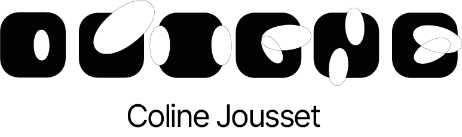
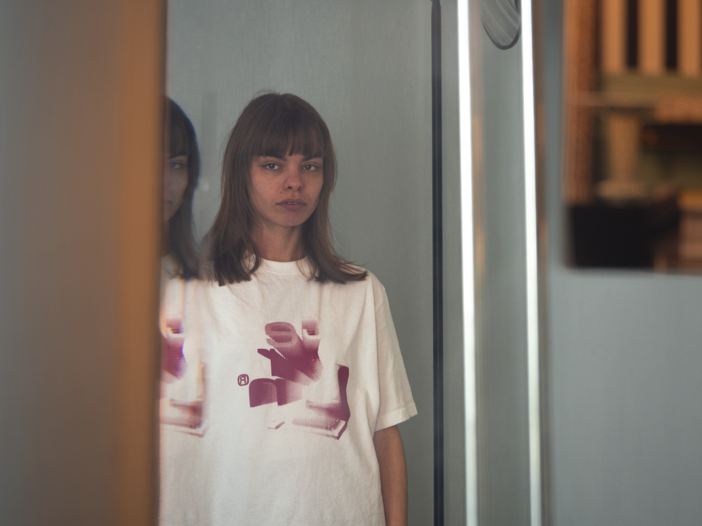

2024-
2026
ENSAAMA Olivier de Serres, Paris 15e
DSAA (Master Degree) in Digital Arts
New Media Artist
Completion expected in June 2026


New Media Artist
Space designer
École Boulle (2020-2024)
ENSAAMA Olivier de Serres (2024-2026)
ENSAAMA Olivier de Serres, Paris 15e
DSAA (Master Degree) in Digital Arts
New Media Artist
Completion expected in June 2026
École Boulle, Paris 12e
DNMADE in Space Design:
Housing, Territories, and Social Innovation
Awarded with Professional Excellence Distinction
Lycée de la communication Saint-Geraud, Aurillac (15)
STD2A Baccalaureate
Science and Technology in Design and Applied Arts
Graduated with High Honors
Exhibition
Gaîté Lyrique, Artiste n. curated by Ét1celle
Exhibition presented as part of Ét1celle Festival with Cop1 - Solidarités Étudiantes, bringing together young artists and plural approaches to contemporary creation.
Finalist - Prix Jeune Création du Mobilier National 2024
La Grande Matériauthèque: Itinera Senssum
Design of the architectural and graphic identity for the future Grande Matériauthèque.
Internship
Collectif Scale
Construction worksite support (wood, electronics, LEDs...) and prototyping for installations (including Toron and Figures). Handling, scenography, and live production for Into the Light at La Villette, MaM, Cabaret Sauvage, and other venues.
Assistant Designer
FA Studio - Paris 11ème
Design, technical drawings, and 3D modeling for various premium fast-casual restaurant concepts.
Photography Report
JMW Studio - Paris 12ème
Observation within the glassblowing and bronze assembly workshop of Jeremy Maxwell Wintrebert and his team.